This document covers the configuration, containerization, and deployment aspects of the Signal trading system. It provides comprehensive guidance on setting up environment variables, Docker containers, and production process management using PM2.
For information about the mathematical analysis services and their runtime behavior, see System Architecture. For details about agent system configuration and behavior controls, see Agent System Reference.
The Signal system uses extensive environment-based configuration through 67+ variables defined in .env.example:1-89. These variables control all aspects of system behavior including database connections, API integrations, trading features, and agent capabilities.
The environment variables are organized into logical groups:
| Category | Variables | Purpose |
|---|---|---|
| Database | CC_MONGO_CONNECTION_STRING, CC_REDIS_HOST, CC_REDIS_PORT, CC_REDIS_USER, CC_REDIS_PASSWORD |
MongoDB and Redis connection parameters |
| AI APIs | CC_OPENAI_API_KEY, CC_CLAUDE_API_KEY, CC_GROK_API_KEY, CC_HF_API_KEY, CC_OLLAMA_API_KEY, CC_DEEPSEEK_API_KEY, CC_MISTRAL_API_KEY, CC_PERPLEXITY_API_KEY, CC_COHERE_API_KEY, CC_ALIBABA_API_KEY |
Authentication keys for various AI inference providers |
| Social Media | CC_MASTODON_INSTANCE, CC_MASTODON_ACCESS_TOKEN, CC_TELEGRAM_BOT, CC_TELEGRAM_TOKEN, CC_TELEGRAM_CHANNEL |
Social media platform integrations |
| Trading Control | CC_ENABLE_TRADE, CC_ENABLE_BTCUSDT, CC_ENABLE_ETHUSDT, CC_ENABLE_BNBUSDT, CC_ENABLE_XRPUSDT, CC_ENABLE_SOLUSDT |
Trading feature flags and supported pairs |
| Ladder Trading | CC_LADDER_LOWER_STEP, CC_LADDER_UPPER_STEP, CC_LADDER_BUY_USDT, CC_LADDER_COMMISSION |
DCA ladder configuration parameters |
| Chat Features | CC_CHAT_ENABLE_LONG_SIGNALS, CC_CHAT_ENABLE_SHORT_SIGNALS, CC_CHAT_ENABLE_SWING_SIGNALS, CC_CHAT_ENABLE_MASTODON_NEWS, CC_CHAT_ENABLE_TWITTER_NEWS, CC_CHAT_ENABLE_VOLUME_DATA, CC_CHAT_ENABLE_PRICE_DATA, CC_CHAT_ENABLE_SLOPE_DATA, CC_CHAT_ENABLE_WHALE_DATA |
Agent system tool availability controls |
The system uses Docker for consistent deployment across environments. The containerization approach leverages Bun runtime for optimal performance and reduced container size.

The Dockerfile:1-16 implements a multi-stage approach:
oven/bun:1.2.19-alpine for minimal footprintcurl for health checksbun installindex.cjs as the main applicationProduction deployment uses PM2 for process management, providing automatic restarts, logging, and monitoring capabilities. The system runs two primary processes with distinct responsibilities.
Both processes share common PM2 configuration patterns defined in config/ecosystem.config.js:19-51:
| Parameter | Value | Purpose |
|---|---|---|
exec_mode |
"fork" |
Single instance per process |
instances |
"1" |
One instance per application |
autorestart |
true |
Automatic restart on crashes |
cron_restart |
"0 0 * * *" |
Daily restart at midnight |
max_memory_restart |
"4096M" |
Restart when memory exceeds 4GB |
interpreter |
~/.bun/bin/bun |
Bun runtime for execution |
merge_logs |
true |
Combine stdout and stderr |
The deployment process follows a structured approach from source code to running containers, with clear separation between build artifacts and runtime dependencies.
bun install --ignore-scripts./logs/pm2/ directory with date formatting